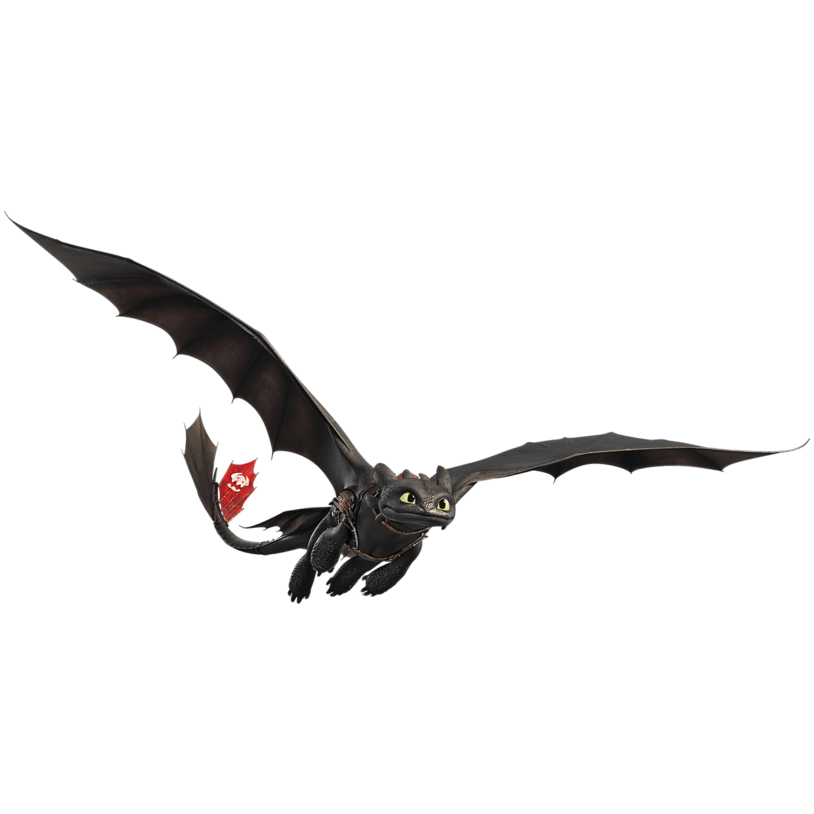
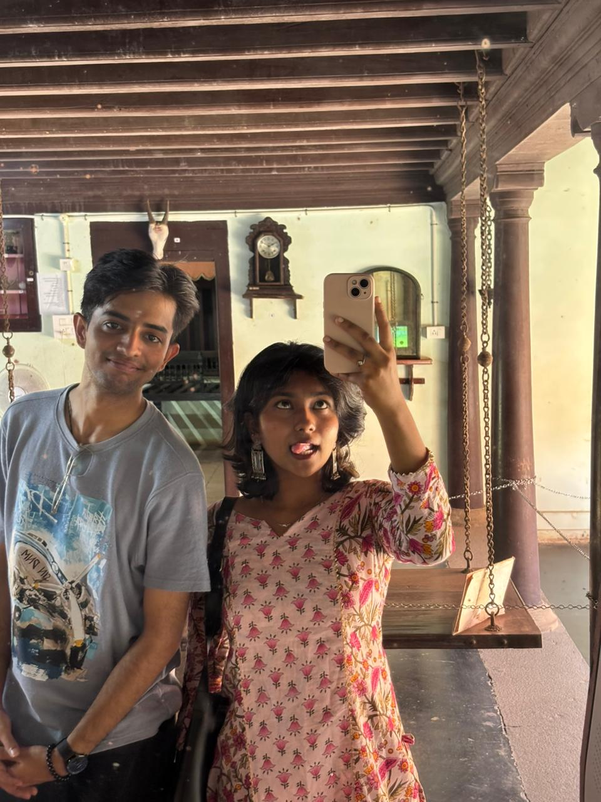

Hi, there sona meri jaan
So...
you know how I basically don't talk
this much to anyone else on earth?
Yeah. That's kind of just a you thing.
I know what you're already thinking.
"Oh no. Another sugar truck."
Except this time I didn't just write you
a paragraph.
I built you an entire website instead.
Don't worry.
I'll still eat your ears off in it.
Probably more than usual, actually.
(No promises I'll stop. Ever.)
chapter one
Where It All Began
We met in college. Ordinary enough, right?
Except here's the part that still makes me laugh — you weren't even supposed to end up talking to me.
You liked one of my friends first.
He's the one who introduced us.
Neither of us had the slightest idea what that one introduction was quietly setting off.
It started as texting. Normal, forgettable texting.
Except it didn't stay normal for very long.
Somehow those texts turned into 4 AM conversations that neither of us had planned on having.
And somewhere in there, it already felt like I'd known you a lot longer than I actually had.

chapter two
Somewhere Along The Way
I can't point to the exact day my best friend quietly stopped being just my best friend.
There wasn't some big dramatic moment for it, either.
You just slowly stopped needing an introduction.
You started telling me things about yourself first, before I'd even asked.
And I listened. Eventually I started doing the same.
One day I just realized — you'd become the first person I wanted to tell everything to.
chapter three
Distance
You're doing your CA. I'm doing my MBA.
Somehow that math adds up to about 2500 kilometers between us.
Some days that number feels loud.
Most days, it really doesn't feel like much at all.
Because every evening, at 5:30, you call.
5:30 is the sunrise to my day.
Maybe we're not late.
Maybe we're just early to a future that's worth waiting for.
chapter four
Little Things
A few titles you've earned, whether you wanted them or not.
a tiny quiz, just for fun
chapter five
Before this website ends...
there's still one last sugar truck left.
This one's just for you ❤️

Thank you...
for finding me.
For sitting through every unnecessarily
long paragraph.
For letting me eat your ears off,
more times than either of us can count.
For becoming the friend I told everything
to, before I even realized that's what
was happening.
For turning 4 AM conversations into
a whole future neither of us saw coming.
For somehow choosing me
despite the sugar trucks.
There's a version of us that's still
ahead of us
First hug.
First date.
First Onam.
First picture, actually together —
not through a screen.
First walk, just the two of us,
no call lag in between.
First everything, really.
the reason this whole website exists
My First.
And Forever.
You already know why those four words
mean more to me than anything else
I could write here.
I'm not going to explain it again.
You already know.
Happy Girlfriend's Day, Kamya
PS.
I'm still going to eat your ears off.
Just this time...
you'll finally be close enough
to poke my eyes.